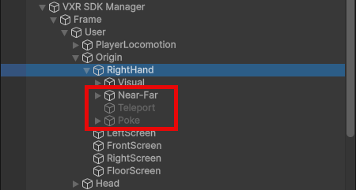
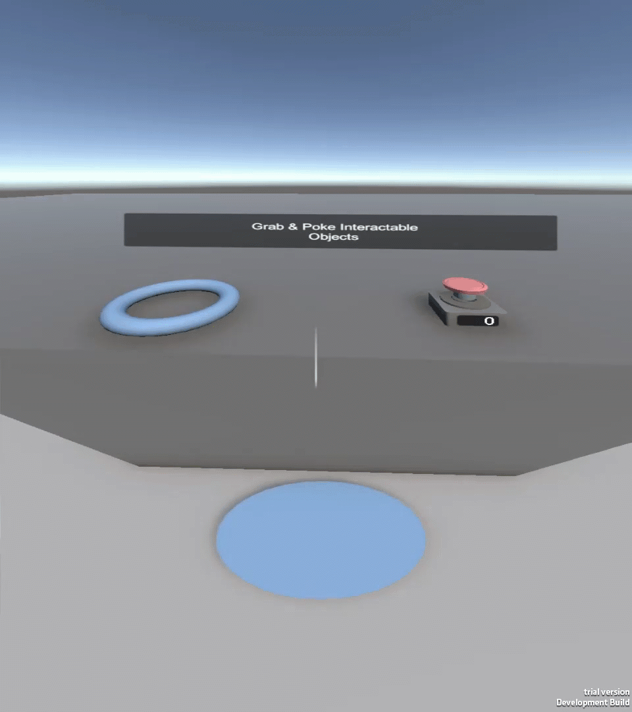
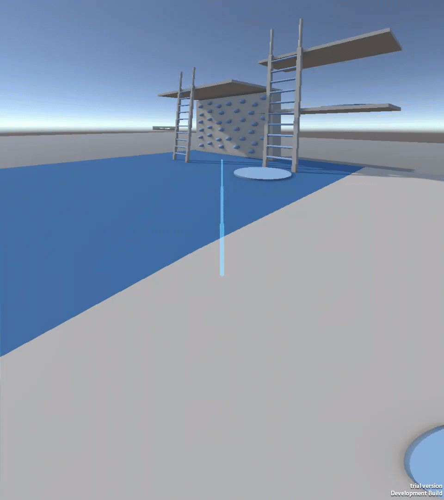
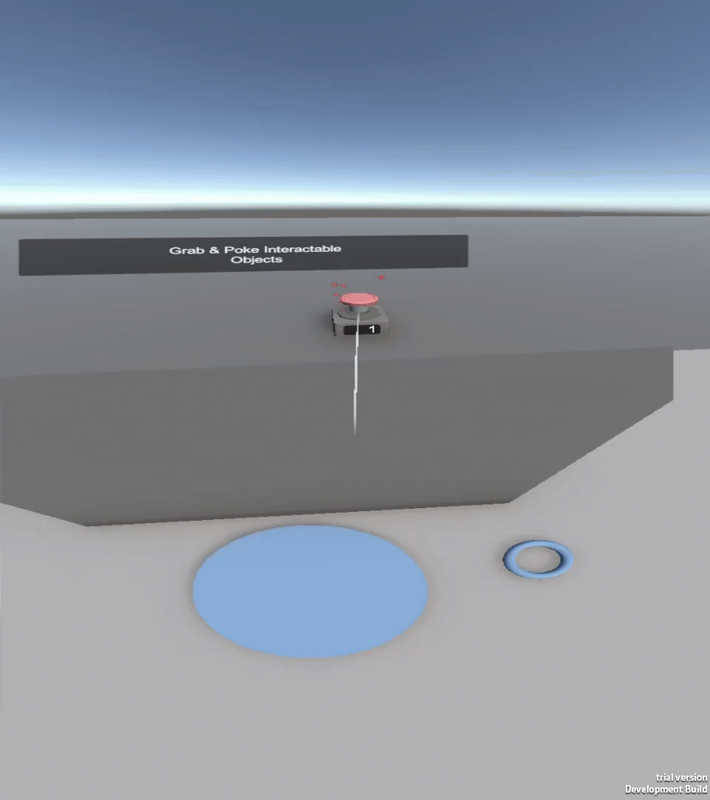

Default interactors
In VotanicXR2 SDK, each player entities, such as their head and hands, can have one or more interactor components (from Unity XR Interation Toolkit) attached to them that allow them to interact with the virtual world.
The right hand entity in VotanicXR2 by default has a list of interactors attached to it. For the related controls, refer to default input mappings.

| Interactor Type | Description | Effect |
|---|---|---|
| Near-Far | A hybrid interactor that switches between direct "touch" grabbing and a long-distance selection ray. |  |
| Teleport | A parabolic XR Ray interactor reserved for locomotion tasks. |  |
| Poke | A fingertip-based interactor for direct contact with World-Space UI and physical buttons. |  |
Tip
By default, the interaction action is assigned to a specific button. You can customize these mappings in the Action Map Editor.